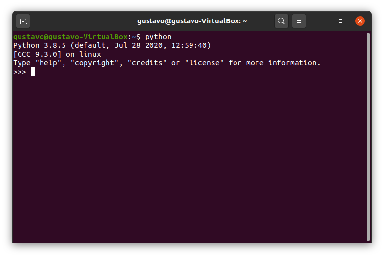
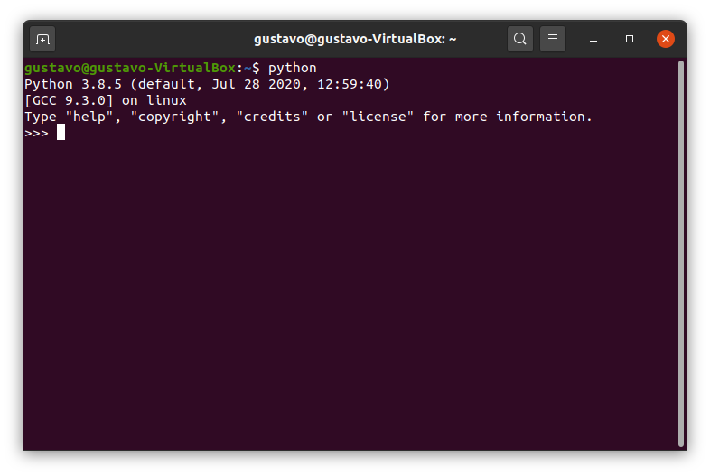

Getting started
Downloading Butano and building their games and examples is easy and doesn't take too much time, pinky promise.
Supported platforms
Butano is built on top of the devkitARM toolchain, so it supports Windows, macOS and Unix-like platforms.
There's also experimental support for Wonderful Toolchain. If you want to try it, go to Getting started with Wonderful Toolchain.
GBA emulator
Before anything, it is convenient to have a GBA emulator at hand, so you don't have to test in real hardware each change you make in your project.
For developing GBA games, mGBA, NanoBoyAdvance, Mesen and the debug version of No$gba are recommended.
devkitARM
The next step is to download and install devkitARM from devkitPro:
- Install the
GBA Developmentcomponent. - Install all members in the
gba-devgroup if the installer asks for which members to install. - Make sure that with the system console (not with the MSYS2 one) you are able to build and run some of the examples located in
/path/to/devkitpro/examples/gba:- By default, devkitARM is installed in
C:\devkitPro\on Windows and in/opt/devkitpro/on Ubuntu. - To build a devkitARM example, open the system console,
cdto the folder of the example you want to build and typemake -j8if your CPU has 8 cores,make -j16if it has 16 and so on. - In particular, you should build and run the Maxmod example located in
/path/to/devkitpro/examples/gba/audio/maxmodbefore going on.
- By default, devkitARM is installed in


Python
To execute some of the tools needed to include image and audio files in your project, you are going to need Python.
If you are going to install Python on Windows, remember to add it to the PATH and to close all system console windows before installing it:

Both Python 2 and Python 3 are supported for now, but Python 2 is not going to be supported for too long. Make sure you can execute Python from the system console:
 
If you have an Ubuntu/Debian based system with python3 instead of python, you can:
- Specify
python3as the Python interpreter path in theMakefileof the project you are trying to build. - Install
python-is-python3:sudo apt-get install python-is-python3.
Butano
Download or clone the latest Butano release from GitHub and put it in a path without spaces or anything weird, please.
Butano examples
Butano contains multiple examples of most aspects of the engine.
Make sure that you are able to build and run some of them:
- They are located in
/path/to/butano/examples/. - As with devkitARM examples, to build a Butano example, open the system console (not the MSYS2 one),
cdto the folder of the example you want to build and typemake -j8if your CPU has 8 cores,make -j16if it has 16 and so on.
When trying to build the sprites example, if everything went as expected, a sprites.gba file should have been generated in the sprites folder, and the system console should show something like this:
Make your own GBA game!
If you were able to build and run some examples, congrats! Now you can make your own GBA game with Butano. To do that:
- Copy the template project located in
/path/to/butano/template/to a path without spaces or weird characters. - Change in the
Makefilethe path in which Butano library folder is located. For example, if Butano is located in/path/to/butano/,LIBBUTANOvariable should be set to/path/to/butano/butano. - If you want, you can also change ROM title, ROM code and more in the
Makefile. cdto the new folder.- Type
make -j#cpu_cores#again.
If everything went as expected, a *.gba file should have been generated in the project folder!
Now learn how to import your assets in the game and also take a look at the modules page. It's always a good idea to play around with the examples as they cover most of what Butano offers. The frequently asked questions (FAQ) are worth a look too, as they answer most of the initial questions.